2026 Advanced Higher Mathematics - Paper 2 marking instructions
Source: Scottish Qualifications Authority (SQA) / Qualifications Scotland. This is a StemInteract HTML companion, not an official HTML edition. Selectable text is supplied alongside original page images. Use the images or original PDF for equations, powers, fractions, vector notation, tables and diagrams; text extraction cannot fully preserve mathematical layout.
Jump to a question
PDF page 1
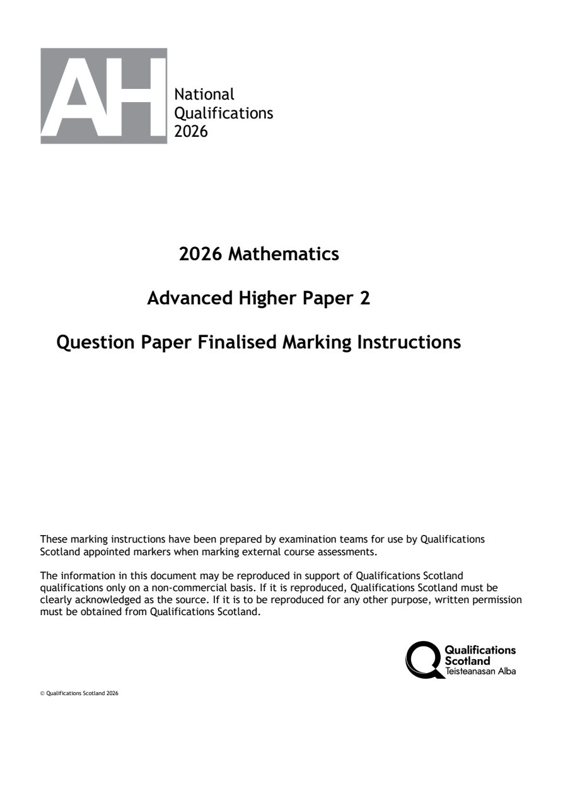
Selectable page text
National
Qualifications
2026
2026 Mathematics
Advanced Higher Paper 2
Question Paper Finalised Marking Instructions
These marking instructions have been prepared by examination teams for use by Qualifications
Scotland appointed markers when marking external course assessments.
The information in this document may be reproduced in support of Qualifications Scotland
qualifications only on a non-commercial basis. If it is reproduced, Qualifications Scotland must be
clearly acknowledged as the source. If it is to be reproduced for any other purpose, written permission
must be obtained from Qualifications Scotland.
© Qualifications Scotland 2026PDF page 2
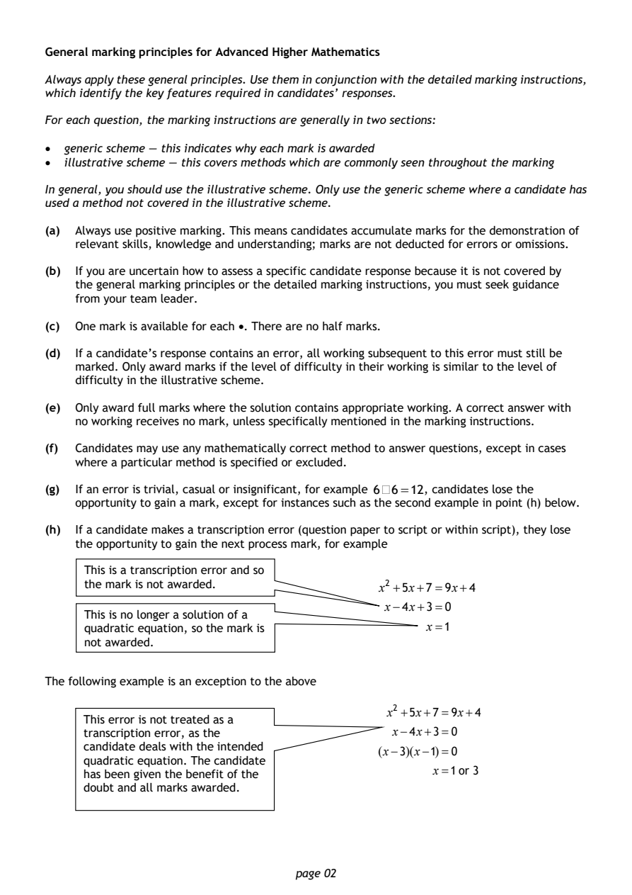
Selectable page text
General marking principles for Advanced Higher Mathematics
Always apply these general principles. Use them in conjunction with the detailed marking instructions,
which identify the key features required in candidates’ responses.
For each question, the marking instructions are generally in two sections:
• generic scheme — this indicates why each mark is awarded
• illustrative scheme — this covers methods which are commonly seen throughout the marking
In general, you should use the illustrative scheme. Only use the generic scheme where a candidate has
used a method not covered in the illustrative scheme.
(a) Always use positive marking. This means candidates accumulate marks for the demonstration of
relevant skills, knowledge and understanding; marks are not deducted for errors or omissions.
(b) If you are uncertain how to assess a specific candidate response because it is not covered by
the general marking principles or the detailed marking instructions, you must seek guidance
from your team leader.
(c) One mark is available for each •. There are no half marks.
(d) If a candidate’s response contains an error, all working subsequent to this error must still be
marked. Only award marks if the level of difficulty in their working is similar to the level of
difficulty in the illustrative scheme.
(e) Only award full marks where the solution contains appropriate working. A correct answer with
no working receives no mark, unless specifically mentioned in the marking instructions.
(f) Candidates may use any mathematically correct method to answer questions, except in cases
where a particular method is specified or excluded.
(g) If an error is trivial, casual or insignificant, for example 6´6=12, candidates lose the
opportunity to gain a mark, except for instances such as the second example in point (h) below.
(h) If a candidate makes a transcription error (question paper to script or within script), they lose
the opportunity to gain the next process mark, for example
This is a transcription error and so
the mark is not awarded. x² +5x+7=9x+4
x−4x+3=0
This is no longer a solution of a
quadratic equation, so the mark is x=1
not a warded.
The following example is an exception to the above
x² +5x+7=9x+4
This error is not treated as a
transcription error, as the x−4x+3=0
candidate deals with the intended
(x−3)(x−1)=0
quadratic equation. The candidate
x=1 or 3
has been given the benefit of the
doubt and all marks awarded.
page 02PDF page 3
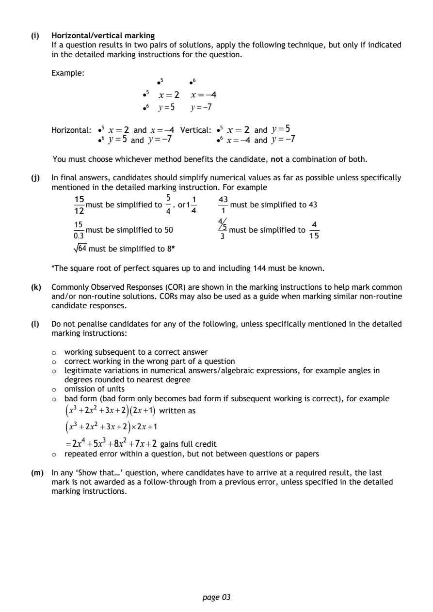
Selectable page text
(i) Horizontal/vertical marking
If a question results in two pairs of solutions, apply the following technique, but only if indicated
in the detailed marking instructions for the question.
Example:
•5 •6
•5 x =2 x=−4
•6 y=5 y=−7
Horizontal: •5 x = x=− rtical: •⁵ x = 2 and y =5
•6 y =5² a ^{a} n ⁿ d ^{d} y =−7⁴ ^{V} ^{e} •6 x=−4 and y =−7
You must choose whichever method benefits the candidate, not a combination of both.
(j) In final answers, candidates should simplify numerical values as far as possible unless specifically
mentioned in the detailed marking instruction. For example
15 5 1 43
must be simplified to . or1 must be simplified to 43
12 4 4 1
4
15 4
5
must be simplified to 50 must be simplified to
0.3 3 15
64 must be simplified to 8*
*The square root of perfect squares up to and including 144 must be known.
(k) Commonly Observed Responses (COR) are shown in the marking instructions to help mark common
and/or non-routine solutions. CORs may also be used as a guide when marking similar non-routine
candidate responses.
(l) Do not penalise candidates for any of the following, unless specifically mentioned in the detailed
marking instructions:
o working subsequent to a correct answer
o correct working in the wrong part of a question
o legitimate variations in numerical answers/algebraic expressions, for example angles in
degrees rounded to nearest degree
o omission of units
o bad form (bad form only becomes bad form if subsequent working is correct), for example
(
x³ +2x² +3x+2
)(2x+1)
written as
( )
x³ +2x² +3x+2 ×2x+1
=2x⁴ +5x³+8x²+7x+2 gains full credit
o repeated error within a question, but not between questions or papers
(m) In any ‘Show that…’ question, where candidates have to arrive at a required result, the last
mark is not awarded as a follow-through from a previous error, unless specified in the detailed
marking instructions.
page 03PDF page 4
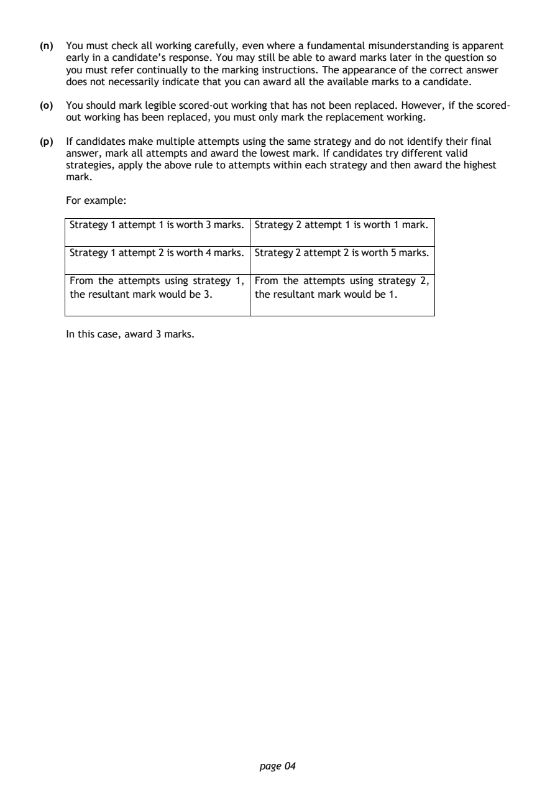
Selectable page text
(n) You must check all working carefully, even where a fundamental misunderstanding is apparent
early in a candidate’s response. You may still be able to award marks later in the question so
you must refer continually to the marking instructions. The appearance of the correct answer
does not necessarily indicate that you can award all the available marks to a candidate.
(o) You should mark legible scored-out working that has not been replaced. However, if the scored-
out working has been replaced, you must only mark the replacement working.
(p) If candidates make multiple attempts using the same strategy and do not identify their final
answer, mark all attempts and award the lowest mark. If candidates try different valid
strategies, apply the above rule to attempts within each strategy and then award the highest
mark.
For example:
Strategy 1 attempt 1 is worth 3 marks. Strategy 2 attempt 1 is worth 1 mark.
Strategy 1 attempt 2 is worth 4 marks. Strategy 2 attempt 2 is worth 5 marks.
From the attempts using strategy 1, From the attempts using strategy 2,
the resultant mark would be 3. the resultant mark would be 1.
In this case, award 3 marks.
page 04PDF page 5
Paper 2, Question 1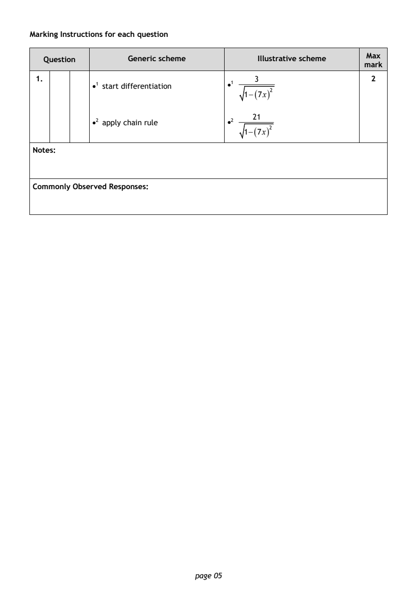
Selectable page text
Marking Instructions for each question
Max
Question Generic scheme Illustrative scheme
mark
1. 3 2
•1 start differentiation •1
1−(7x)²
21
•2 apply chain rule •2
1−(7x)²
Notes:
Commonly Observed Responses:
page 05PDF page 6
Paper 2, Question 2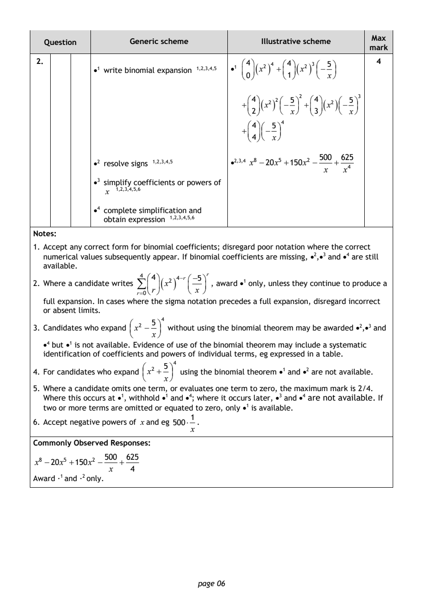
Selectable page text
Max
Question Generic scheme Illustrative scheme
mark
2. •1 write binomial expansion ¹^{,}²^{,}3,4,5 •1 4 ( x² ) ⁴ + 4 ( x² ) ³ − 5 4
0 1 x
4 ( ) 5² 4 ( ) 5³
+ x² ²− + x² −
2 x 3 x
4 5⁴
+ −
4 x
500 625
•2 resolve signs ¹^{,}²^{,}3,4,5 •2,3,4 x⁸ −20x⁵ +150x² − +
x x⁴
•3 simpl₂i_{,}f₃_{,}y₄ _{,}₅c_{,}o₆efficients or powers of
x ¹^{,}
•4 complete simplificat₂i_{,}o₃_{,}n₄_{,} ₅a_{,}₆nd
obtain expression ¹^{,}
Notes:
1. Accept any correct form for binomial coefficients; disregard poor notation where the correct
numerical values subsequently appear. If binomial coefficients are missing, •²,•3 and •⁴ are still
available.
2. Where a candidate writes ∑⁴ 4 ( x² ) ⁴⁻ r −5 ^{r} , award •¹ only, unless they continue to produce a
r x
r=0
full expansion. In cases where the sigma notation precedes a full expansion, disregard incorrect
or absent limits.
5⁴
3. Candidates who expand x² − without using the binomial theorem may be awarded •²,•3 and
x
•4 but •¹ is not available. Evidence of use of the binomial theorem may include a systematic
identification of coefficients and powers of individual terms, eg expressed in a table.
5⁴
4. For candidates who expand x² + using the binomial theorem •¹ and •² are not available.
x
5. Where a candidate omits one term, or evaluates one term to zero, the maximum mark is 2/4.
Where this occurs at •¹, withhold •¹ and •⁴; where it occurs later, •³ and •⁴ are not available. If
two or more terms are omitted or equated to zero, only •¹ is available.
1
6. Accept negative powers of xand eg 500⋅ .
x
Commonly Observed Responses:
500 625
x⁸ −20x⁵ +150x² − +
x 4
Award ·¹ and ·² only.
page 06PDF page 7
Paper 2, Question 3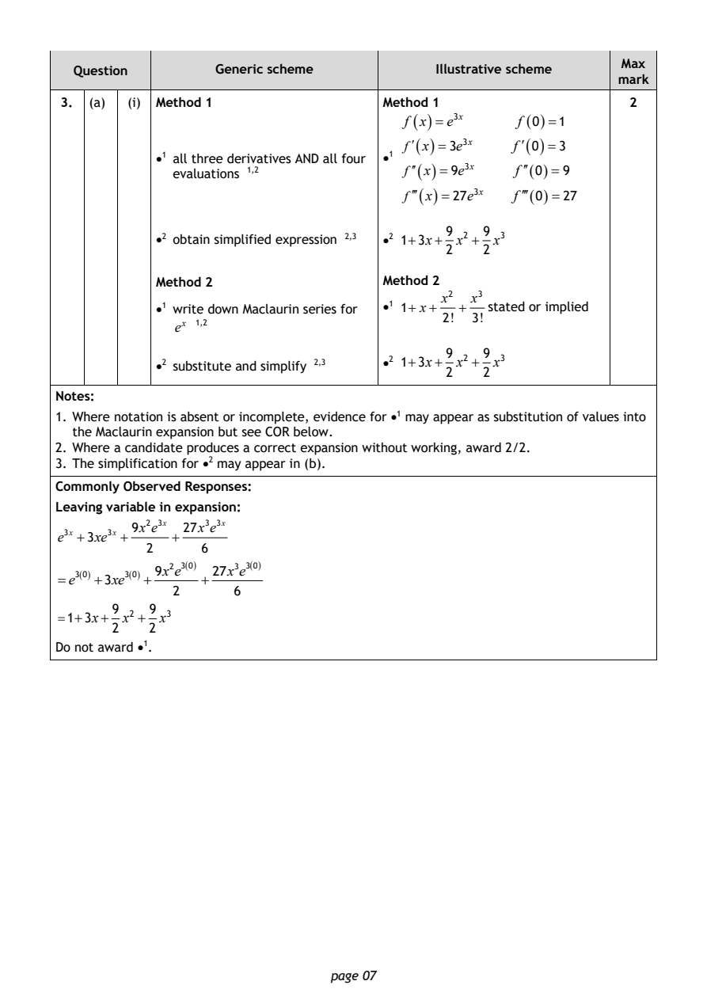
Selectable page text
Max
Question Generic scheme Illustrative scheme
mark
3. (a) (i) Method 1 Method 1 2
f (x)=e³^{x} f (0)=1
f′(x)=3e³^{x} f′(0)=3
•1 all three derivatives AND all four •1
evaluations ¹^{,}²
f′′(x)=9e³^{x} f ′′(0)=9
f′′′(x)=27e³^{x} f ′′′(0)=27
9 9
•2 obtain simplified expression ²^{,}³ •2 1+3x+ x² + x³
2 2
Method 2 Method 2
x² x³
•1 write down Maclaurin series for •1 1+ x+ + stated or implied
2! 3!
e^{x} ¹^{,}²
9 9
•2 substitute and simplify ²^{,}³
•2 1+3x+ x² + x³
2 2
Notes:
1. Where notation is absent or incomplete, evidence for •¹ may appear as substitution of values into
the Maclaurin expansion but see COR below.
2. Where a candidate produces a correct expansion without working, award 2/2.
3. The simplification for •² may appear in (b).
Commonly Observed Responses:
Leaving variable in expansion:
9x²e³^{x} 27x³e³^{x}
e³^{x} +3xe³^{x} + +
2 6
9x²e³⁽⁰⁾ 27x³e³⁽⁰⁾
=e³⁽⁰⁾ +3xe³⁽⁰⁾ + +
2 6
9 9
=1+3x+ x² + x³
2 2
Do not award •¹.
page 07PDF page 8
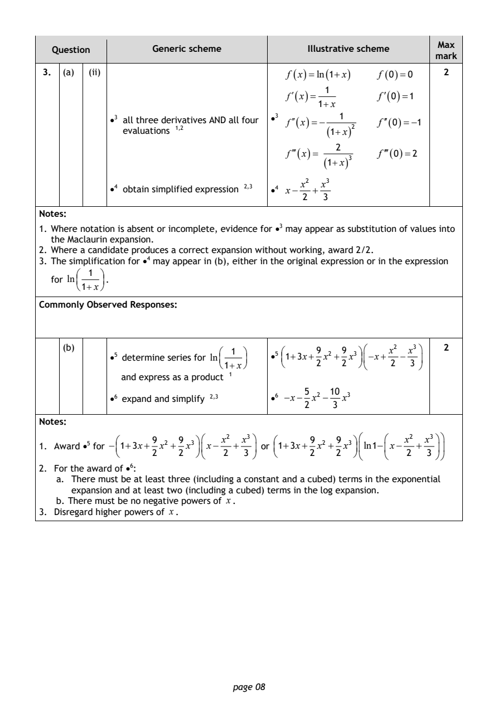
Selectable page text
Max
Question Generic scheme Illustrative scheme
mark
3. (a) (ii) f (x)=ln(1+x) f (0)=0 2
1
f′(x)= f′(0)=1
1+x
•3 all three derivatives AND all four •3 f′′(x)=− 1 f′′(0)=−1
evaluations ¹^{,}² (1+x)²
2
f′′′(x)= f′′′(0)=2
(1+x)³
x² x³
•4 obtain simplified expression ²^{,}³ •4 x− +
2 3
Notes:
1. Where notation is absent or incomplete, evidence for •³ may appear as substitution of values into
the Maclaurin expansion.
2. Where a candidate produces a correct expansion without working, award 2/2.
3. The simplification for •⁴ may appear in (b), either in the original expression or in the expression
1
for ln .
1+x
Commonly Observed Responses:
(b) 1 9 9 x² x³ 2
•5 determine series for ln •5 1+3x+ x² + x³ −x+ −
1+x 2 2 2 3
and express as a product ¹
5 10
•6 expand and simplify ²^{,}³ •6 −x− x² − x³
2 3
Notes:
9 9 x² x³ 9 9 x² x³
1. Award •⁵ for −1+3x+ x² + x³ x− + or 1+3x+ x² + x³ln1− x− +
2 2 2 3 2 2 2 3
2. For the award of •⁶:
a. There must be at least three (including a constant and a cubed) terms in the exponential
expansion and at least two (including a cubed) terms in the log expansion.
b. There must be no negative powers of x.
3. Disregard higher powers of x.
page 08PDF page 9
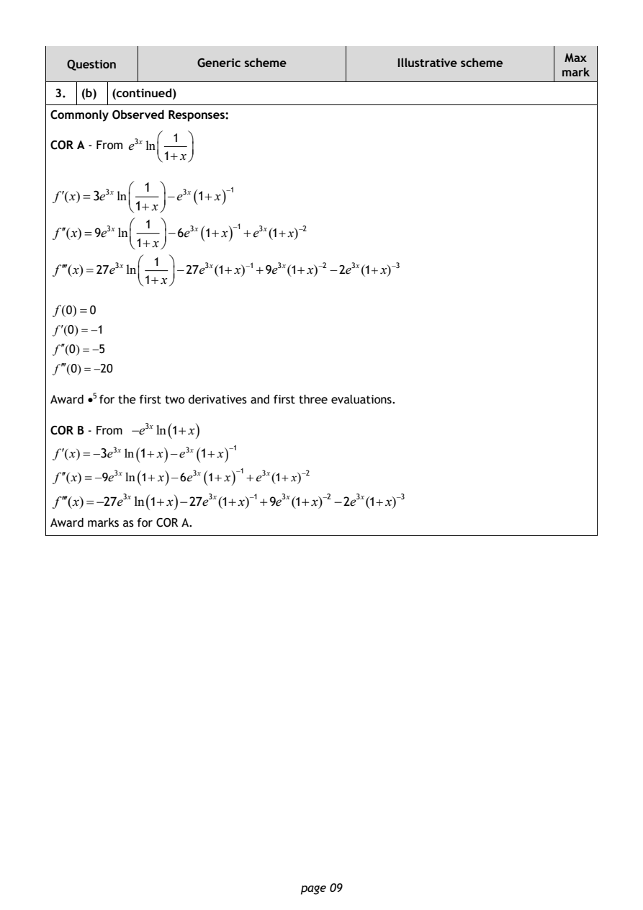
Selectable page text
Max
Question Generic scheme Illustrative scheme
mark
3. (b) (continued)
Commonly Observed Responses:
1
COR A - From e³^{x}ln
1+x
1
f′(x)=3e³^{x}ln
−e³^{x}(1+x)⁻¹
1+x
1
f′′(x)=9e³^{x}ln
−6e³^{x}(1+x)⁻¹+e³^{x}(1+x)⁻²
1+x
1
f′′′(x)=27e³^{x}ln
−27e³^{x}(1+x)⁻¹+9e³^{x}(1+x)⁻² −2e³^{x}(1+x)⁻³
1+x
f(0)=0
f′(0)=−1
f′′(0)=−5
f′′′(0)=−20
Award •⁵ for the first two derivatives and first three evaluations.
COR B - From −e³^{x}ln(1+x)
f′(x)=−3e³^{x}ln(1+x)−e³^{x}(1+x)⁻¹
f′′(x)=−9e³^{x}ln(1+x)−6e³^{x}(1+x)⁻¹+e³^{x}(1+x)⁻²
f′′′(x)=−27e³^{x}ln(1+x)−27e³^{x}(1+x)⁻¹+9e³^{x}(1+x)⁻² −2e³^{x}(1+x)⁻³
Award marks as for COR A.
page 09PDF page 10
Paper 2, Question 4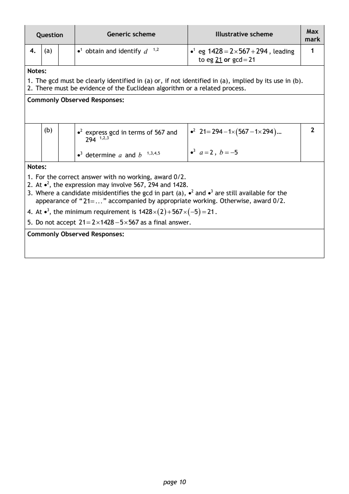
Selectable page text
Max
Question Generic scheme Illustrative scheme
mark
4. (a) •1 obtain and identify d ¹^{,}² •1 eg 1428=2×567+294, leading 1
to eg 21 or gcd=21
Notes:
1. The gcd must be clearly identified in (a) or, if not identified in (a), implied by its use in (b).
2. There must be evidence of the Euclidean algorithm or a related process.
Commonly Observed Responses:
(b) •2 expres₂s_{,}₃ gcd in terms of 567 and •2 21=294−1×(567−1×294)… 2
294 ¹^{,}
•3 a=2, b=−5
•3 determine a and b ¹^{,}³^{,}4,5
Notes:
1. For the correct answer with no working, award 0/2.
2. At •², the expression may involve 567, 294 and 1428.
3. Where a candidate misidentifies the gcd in part (a), •² and •³ are still available for the
appearance of “21= ” accompanied by appropriate working. Otherwise, award 0/2.
4. At •³, the minimum requirement is 1428×(2)+567×(−5)=21.
5. Do not accept 21=2×1428−5×567as a final answer.
Commonly Observed Responses:
page 10PDF page 11
Paper 2, Question 5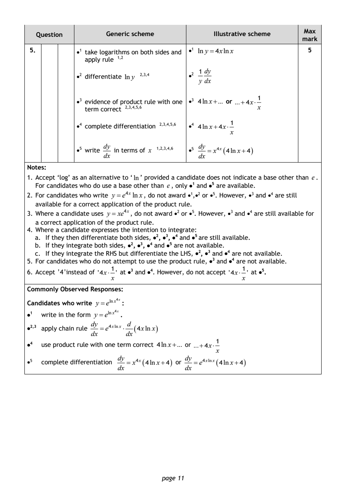
Selectable page text
Max
Question Generic scheme Illustrative scheme
mark
5. •1 take logarith₂ms on both sides and •¹ lny=4xlnx 5
apply rule ¹^{,}
1 dy
•2 differentiate lny ²^{,}³^{,}4 •2
y dx
1
•3 evidence of prod_{,}₄u_{,}₅c_{,}₆t rule with one •³ 4lnx+... or ...+4x⋅
term correct ²^{,}³
x
1
•4 complete differentiation ²^{,}³^{,}4,5,6 •4 4lnx+4x⋅
x
dy dy
•5 write in terms of x ¹^{,}²^{,}3,4,6 •5 = x⁴^{x}(4lnx+4)
dx dx
Notes:
1. Accept ‘log’ as an alternative to ‘ln’ provided a candidate does not indicate a base other than e.
For candidates who do use a base other than e, only •¹ and •⁵ are available.
2. For candidates who write y=e⁴^{x}lnx, do not award •¹,•2 or •⁵. However, •³ and •⁴ are still
available for a correct application of the product rule.
3. Where a candidate uses y= xe⁴^{x}, do not award •² or •⁵. However, •³ and •⁴ are still available for
a correct application of the product rule.
4. Where a candidate expresses the intention to integrate:
a. If they then differentiate both sides, •², •3, •4 and •⁵ are still available.
b. If they integrate both sides, •², •3, •4 and •⁵ are not available.
c. If they integrate the RHS but differentiate the LHS, •², •3 and •⁴ are not available.
5. For candidates who do not attempt to use the product rule, •³ and •⁴ are not available.
1 1
6. Accept '4'instead of '4x⋅ ' at •³ and •⁴. However, do not accept '4x⋅ ' at •⁵.
x x
Commonly Observed Responses:
Candidates who write y=e^{l}ⁿ^{x}⁴^{x}:
•1 write in the form y=e^{l}ⁿ^{x}⁴^{x}.
dy d
•2,3 apply chain rule =e⁴^{x}^{l}ⁿ^{x}⋅ (4xlnx)
dx dx
1
•4 use product rule with one term correct 4lnx+... or ...+4x⋅
x
dy dy
•5 complete differentiation = x⁴^{x}(4lnx+4) or =e⁴^{x}^{l}ⁿ^{x}(4lnx+4)
dx dx
page 11PDF page 12
Paper 2, Question 6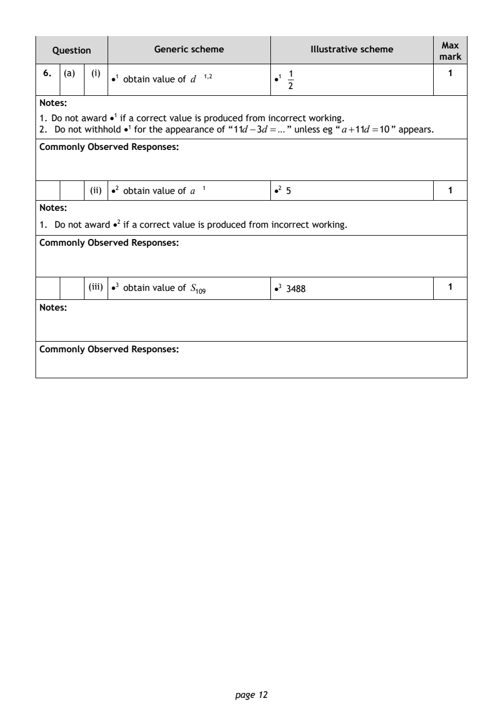
Selectable page text
Max
Question Generic scheme Illustrative scheme
mark
6. (a) (i) 1 1
•1 obtain value of d ¹^{,}² •1
2
Notes:
1. Do not award •¹ if a correct value is produced from incorrect working.
2. Do not withhold •¹ for the appearance of “11d−3d =...” unless eg “a+11d =10” appears.
Commonly Observed Responses:
(ii) •2 obtain value of a ¹ •2 5 1
Notes:
1. Do not award •² if a correct value is produced from incorrect working.
Commonly Observed Responses:
(iii) •3 obtain value of S₁₀₉ •3 3488 1
Notes:
Commonly Observed Responses:
page 12PDF page 13
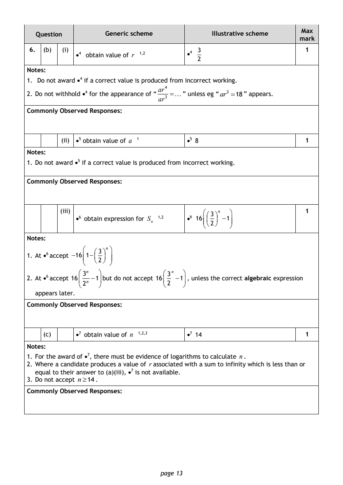
Selectable page text
Max
Question Generic scheme Illustrative scheme
mark
6. (b) (i) 3 1
•4 obtain value of r ¹^{,}² •4
2
Notes:
1. Do not award •⁴ if a correct value is produced from incorrect working.
ar⁴
2. Do not withhold •⁴ for the appearance of “ = ” unless eg “ar³ =18” appears.
ar³
Commonly Observed Responses:
(ii) •5 obtain value of a ¹ •5 8 1
Notes:
1. Do not award •⁵ if a correct value is produced from incorrect working.
Commonly Observed Responses:
(iii) 3ⁿ 1
•6 obtain expression for Sₙ ¹^{,}² •6 16 −1
2
Notes:
3ⁿ
1. At •⁶ accept −161−
2
3ⁿ 3ⁿ
2. At •⁶ accept 16 −1but do not accept 16 −1, unless the correct algebraic expression
2ⁿ 2
appears later.
Commonly Observed Responses:
(c) •7 obtain value of n ¹^{,}²^{,}3 •7 14 1
Notes:
1. For the award of •⁷, there must be evidence of logarithms to calculate n.
2. Where a candidate produces a value of rassociated with a sum to infinity which is less than or
equal to their answer to (a)(iii), •⁷ is not available.
3. Do not accept n≥14.
Commonly Observed Responses:
page 13PDF page 14
Paper 2, Question 7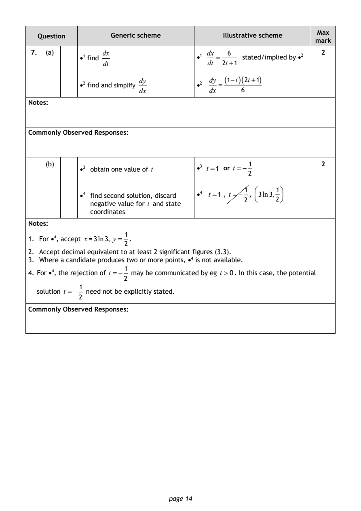
Selectable page text
Max
Question Generic scheme Illustrative scheme
mark
7. (a) dx dx 6 2
•1 find •1 = stated/implied by •²
dt dt 2t+1
dy dy
(1−t)(2t+1)
•2 find and simplify •2 =
dx dx 6
Notes:
Commonly Observed Responses:
(b) 1 2
•3 obtain one value of t •3 t =1 or t =−
2
1 1
•4 find second solution, discard •4 t =1 , t =− , 3ln3,
2 2
negative value for t and state
coordinates
Notes:
1
1. For •⁴, accept x=3ln3, y = .
2
2. Accept decimal equivalent to at least 2 significant figures (3.3).
3. Where a candidate produces two or more points, •⁴ is not available.
1
4. For •⁴, the rejection of t =− may be communicated by eg t >0. In this case, the potential
2
1
solution t =− need not be explicitly stated.
2
Commonly Observed Responses:
page 14PDF page 15
Paper 2, Question 8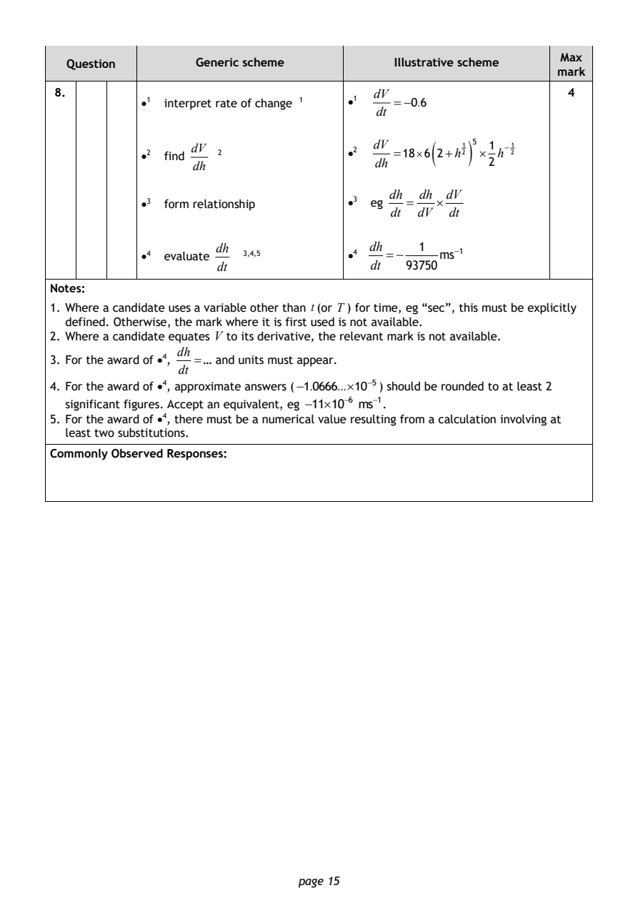
Selectable page text
Max
Question Generic scheme Illustrative scheme
mark
8. dV 4
•1 interpret rate of change ¹ •1 =−0.6
dt
dV ₂ dV ( ) 1
•2 find •2 =18×6 2+h²¹ ⁵× h⁻²¹
dh 2
dh
dh dh dV
•3 form relationship •3 eg = ×
dt dV dt
dh ₃_{,}₄ dh 1
•4 evaluate ,5 •4 =− ms⁻¹
dt dt 93750
Notes:
1. Where a candidate uses a variable other than t(or T) for time, eg “sec”, this must be explicitly
defined. Otherwise, the mark where it is first used is not available.
2. Where a candidate equates V to its derivative, the relevant mark is not available.
dh
3. For the award of •⁴, =… and units must appear.
dt
4. For the award of •⁴, approximate answers (−1.0666...×10⁻⁵) should be rounded to at least 2
significant figures. Accept an equivalent, eg −11×10⁻⁶ ms⁻¹.
5. For the award of •⁴, there must be a numerical value resulting from a calculation involving at
least two substitutions.
Commonly Observed Responses:
page 15PDF page 16
Paper 2, Question 9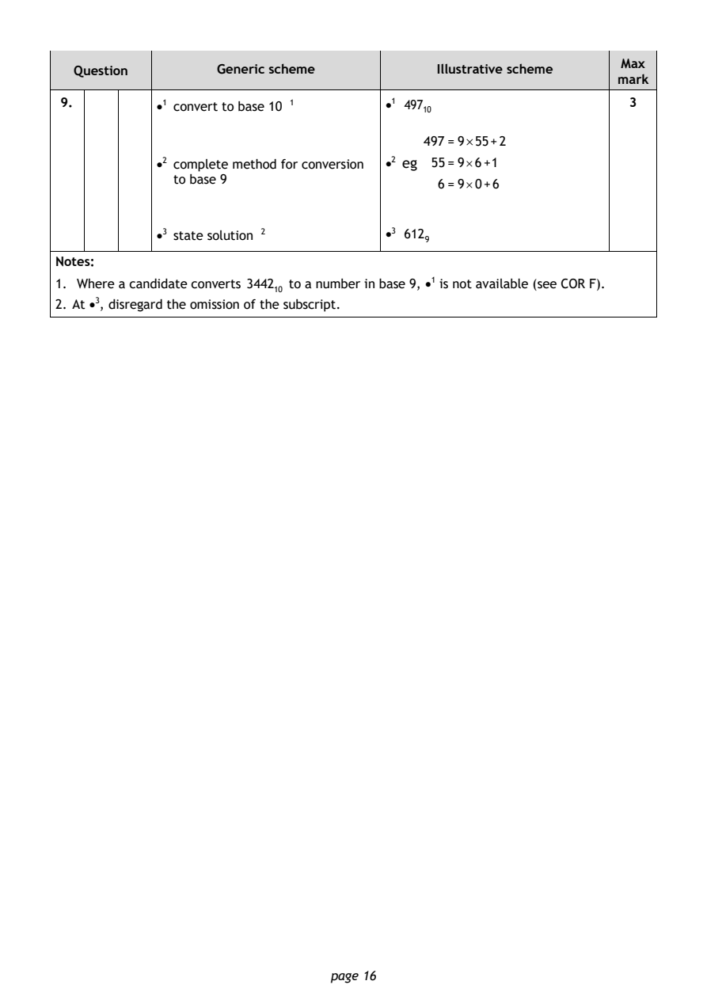
Selectable page text
Max
Question Generic scheme Illustrative scheme
mark
9. •1 convert to base 10 ¹ •1 497₁₀ 3
497=9×55+2
•2 complete method for conversion •2 eg 55=9×6+1
to base 9
6=9×0+6
•3 state solution ² •3 612₉
Notes:
1. Where a candidate converts 3442₁₀ to a number in base 9, •¹ is not available (see COR F).
2. At •³, disregard the omission of the subscript.
page 16PDF page 17
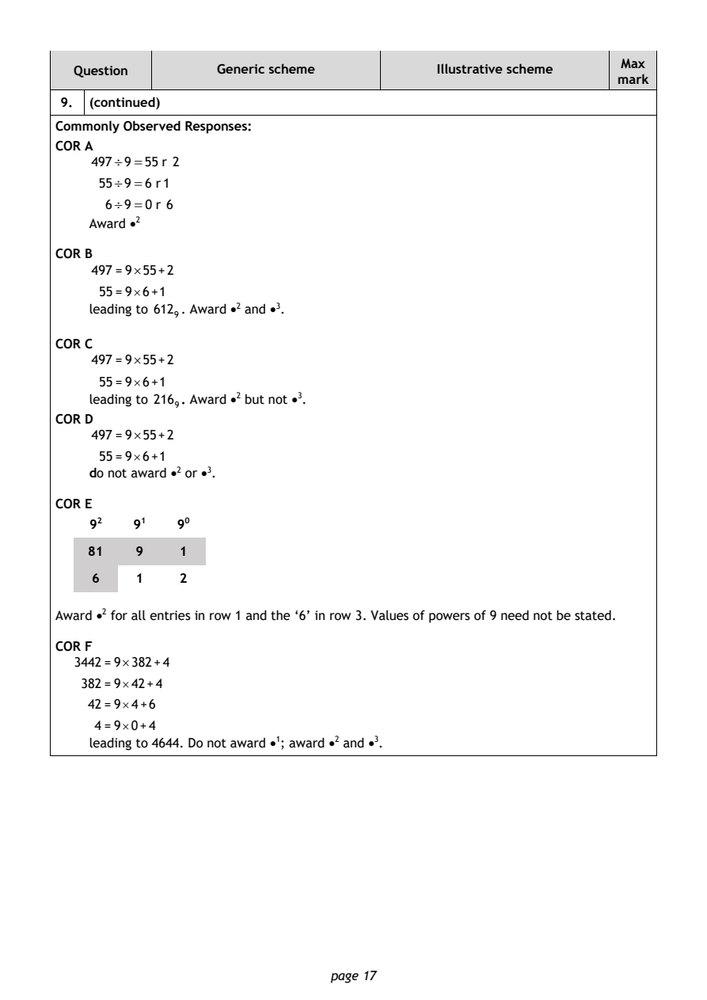
Selectable page text
Max
Question Generic scheme Illustrative scheme
mark
9. (continued)
Commonly Observed Responses:
COR A
497÷9=55r 2
55÷9=6 r 1
6÷9=0 r 6
Award •²
COR B
497=9×55+2
55=9×6+1
leading to 612₉. Award •² and •³.
COR C
497=9×55+2
55=9×6+1
leading to 216₉. Award •² but not •³.
COR D
497=9×55+2
55=9×6+1
do not award •² or •³.
COR E
9² 9¹ 9⁰
81 9 1
6 1 2
Award •² for all entries in row 1 and the ‘6’ in row 3. Values of powers of 9 need not be stated.
COR F
3442=9×382+4
382=9×42+4
42=9×4+6
4=9×0+4
leading to 4644. Do not award •¹; award •² and •³.
page 17PDF page 18
Paper 2, Question 10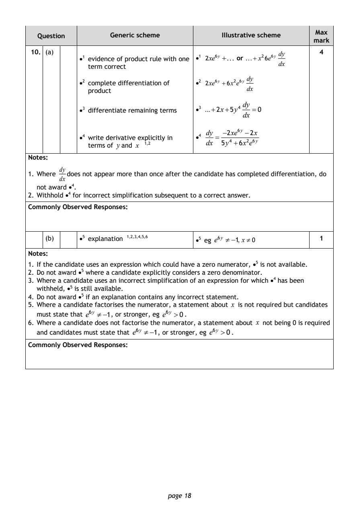
Selectable page text
Max
Question Generic scheme Illustrative scheme
mark
10. (a) dy 4
•1 evidence of product rule with one •¹ 2xe⁶^{y} + or +x²6e⁶^{y}
term correct
dx
dy
•2 complete differentiation of •2 2xe⁶^{y} +6x²e⁶^{y}
dx
product
dy
•3 differentiate remaining terms •3 ...+2x+5y⁴ =0
dx
dy −2xe⁶^{y} −2x
•4 write derivative exp₂licitly in •4 =
terms of yand x ¹^{,}
dx 5y⁴ +6x²e⁶^{y}
Notes:
dy
1. Where does not appear more than once after the candidate has completed differentiation, do
dx
not award •⁴.
2. Withhold •⁴ for incorrect simplification subsequent to a correct answer.
Commonly Observed Responses:
(b) •5 explanation ¹^{,}²^{,}3,4,5,6 •5 eg e⁶^{y} ≠−1, x≠0 1
Notes:
1. If the candidate uses an expression which could have a zero numerator, •⁵ is not available.
2. Do not award •⁵ where a candidate explicitly considers a zero denominator.
3. Where a candidate uses an incorrect simplification of an expression for which •⁴ has been
withheld, •⁵ is still available.
4. Do not award •⁵ if an explanation contains any incorrect statement.
5. Where a candidate factorises the numerator, a statement about x is not required but candidates
must state that e⁶^{y} ≠−1, or stronger, eg e⁶^{y} >0.
6. Where a candidate does not factorise the numerator, a statement about x not being 0 is required
and candidates must state that e⁶^{y} ≠−1, or stronger, eg e⁶^{y} >0.
Commonly Observed Responses:
page 18PDF page 19
Paper 2, Question 11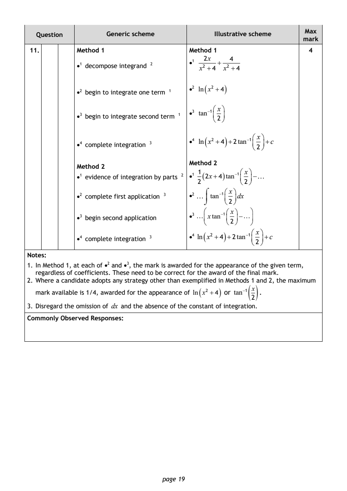
Selectable page text
Max
Question Generic scheme Illustrative scheme
mark
11. Method 1 Method 1 4
2x 4
•1 +
•1 decompose integrand ²
x² +4 x² +4
•2 ln ( x² +4 )
•2 begin to integrate one term ¹
x
•3 begin to integrate second term ¹
•3 tan⁻¹
2
( ) x
•4 complete integration ³
•4 ln x² +4 +2tan⁻¹
+c
2
Method 2
Method 2
•1 evidence of integration by parts ² •1
1
(2x+4)tan⁻¹
x
−
2 2
⌠ x
•2 complete first application ³ •2 tan⁻¹ dx
⌡ 2
x
•3 begin second application •3 xtan⁻¹ −
2
x
( )
•4 complete integration ³ •4 ln x² +4 +2tan⁻¹ +c
2
Notes:
1. In Method 1, at each of •² and •³, the mark is awarded for the appearance of the given term,
regardless of coefficients. These need to be correct for the award of the final mark.
2. Where a candidate adopts any strategy other than exemplified in Methods 1 and 2, the maximum
( )
x
mark available is 1/4, awarded for the appearance of ln ( x² +4 ) or tan⁻¹ .
2
3. Disregard the omission of dx and the absence of the constant of integration.
Commonly Observed Responses:
page 19PDF page 20
Paper 2, Question 12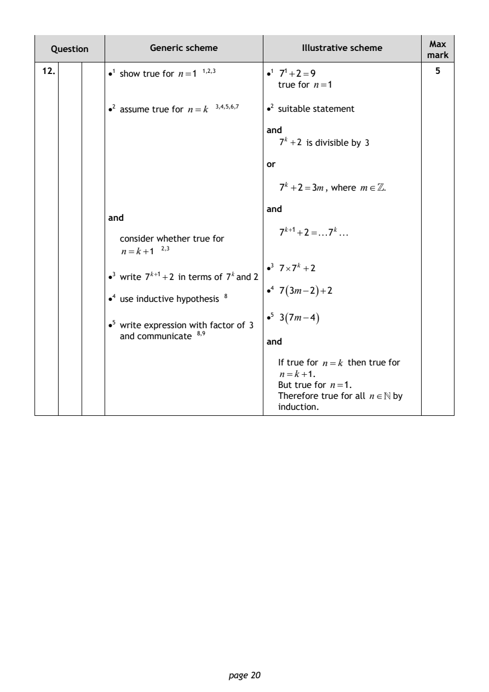
Selectable page text
Max
Question Generic scheme Illustrative scheme
mark
12. •1 show true for n=1 ¹^{,}²^{,}3 •1 7¹+2=9 5
true for n=1
•2 assume true for n=k ³^{,}⁴,5,6,7 •2 suitable statement
and
7^{k} +2 is divisible by 3
or
7^{k} +2=3m, where m∈.
and
and
7^{k}⁺¹+2=7^{k}
consider whether true for
n=k+1 ²^{,}³
•3 7×7^{k} +2
•3 write 7^{k}⁺¹+2 in terms of 7^{k}and 2
•4 7(3m−2)+2
•4 use inductive hypothesis ⁸
•5 3(7m−4)
•5 write expression with factor of 3
and communicate ⁸^{,}⁹
and
If true for n=k then true for
n=k+1.
But true for n=1.
Therefore true for all n∈ by
induction.
page 20PDF page 21
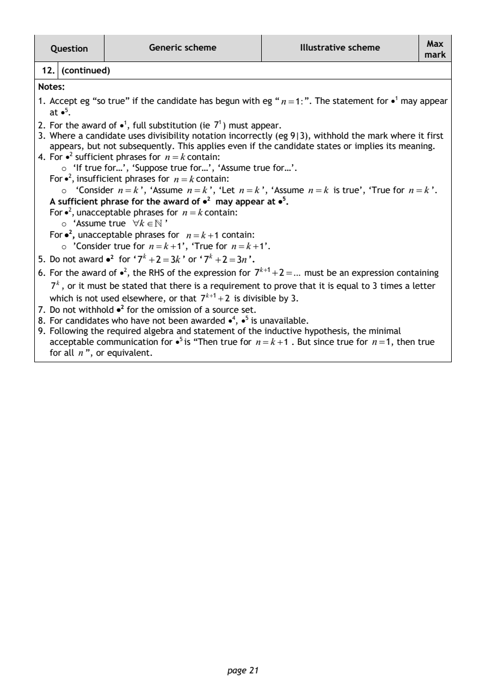
Selectable page text
Max
Question Generic scheme Illustrative scheme
mark
12. (continued)
Notes:
1. Accept eg “so true” if the candidate has begun with eg “n=1:”. The statement for •¹ may appear
at •⁵.
2. For the award of •¹, full substitution (ie 7¹) must appear.
3. Where a candidate uses divisibility notation incorrectly (eg 9|3), withhold the mark where it first
appears, but not subsequently. This applies even if the candidate states or implies its meaning.
4. For •² sufficient phrases for n=kcontain:
o ‘If true for…’, ‘Suppose true for…’, ‘Assume true for…’.
For •², insufficient phrases for n=kcontain:
o ‘Consider n=k’, ‘Assume n=k’, ‘Let n=k’, ‘Assume n=k is true’, ‘True for n=k’.
A sufficient phrase for the award of •² may appear at •⁵.
For •², unacceptable phrases for n=kcontain:
o ‘Assume true ∀k∈ ’
For •², unacceptable phrases for n=k+1 contain:
o ’Consider true for n=k+1’, ‘True for n=k+1’.
5. Do not award •² for ‘7^{k} +2=3k’ or ‘7^{k} +2=3n’.
6. For the award of •², the RHS of the expression for 7^{k}⁺¹+2=... must be an expression containing
7^{k}, or it must be stated that there is a requirement to prove that it is equal to 3 times a letter
which is not used elsewhere, or that 7^{k}⁺¹+2 is divisible by 3.
7. Do not withhold •² for the omission of a source set.
8. For candidates who have not been awarded •⁴, •5 is unavailable.
9. Following the required algebra and statement of the inductive hypothesis, the minimal
acceptable communication for •⁵ is “Then true for n=k+1 . But since true for n=1, then true
for all n”, or equivalent.
page 21PDF page 22
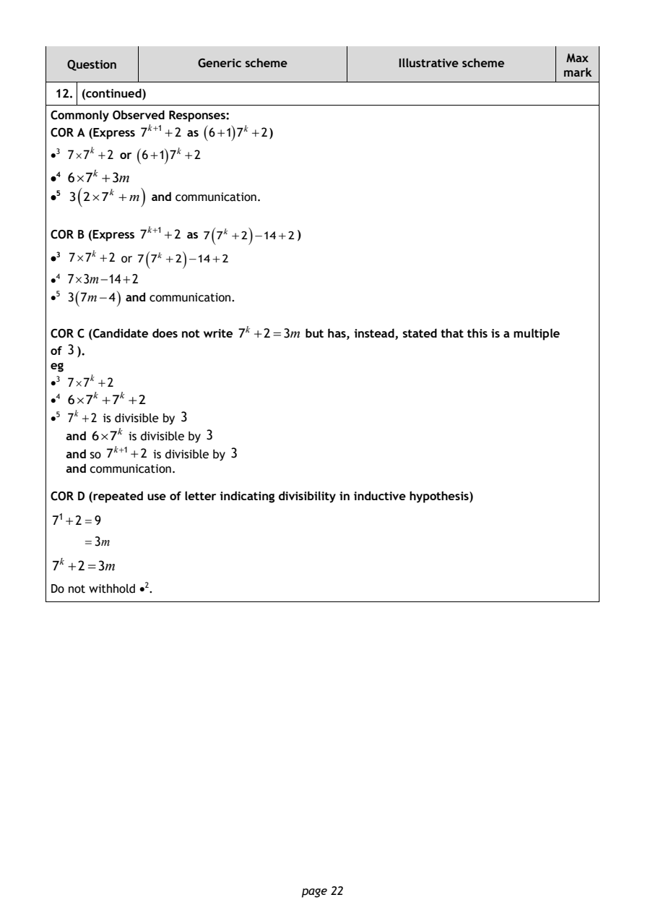
Selectable page text
Max
Question Generic scheme Illustrative scheme
mark
12. (continued)
Commonly Observed Responses:
COR A (Express 7^{k}⁺¹+2 as (6+1)7^{k} +2)
•3 7×7^{k} +2 or (6+1)7^{k} +2
•4 6×7^{k} +3m
( )
•5 3 2×7^{k} +m and communication.
COR B (Express 7^{k}⁺¹+2 as 7 ( 7^{k} +2 ) −14+2)
•3 7×7^{k} +2 or 7 ( 7^{k} +2 ) −14+2
•4 7×3m−14+2
•5 3(7m−4) and communication.
COR C (Candidate does not write 7^{k} +2=3m but has, instead, stated that this is a multiple
of 3).
eg
•3 7×7^{k} +2
•4 6×7^{k} +7^{k} +2
•5 7^{k} +2 is divisible by 3
and 6×7^{k} is divisible by 3
and so 7^{k}⁺¹+2 is divisible by 3
and communication.
COR D (repeated use of letter indicating divisibility in inductive hypothesis)
7¹+2=9
=3m
7^{k} +2=3m
Do not withhold •².
page 22PDF page 23
Paper 2, Question 13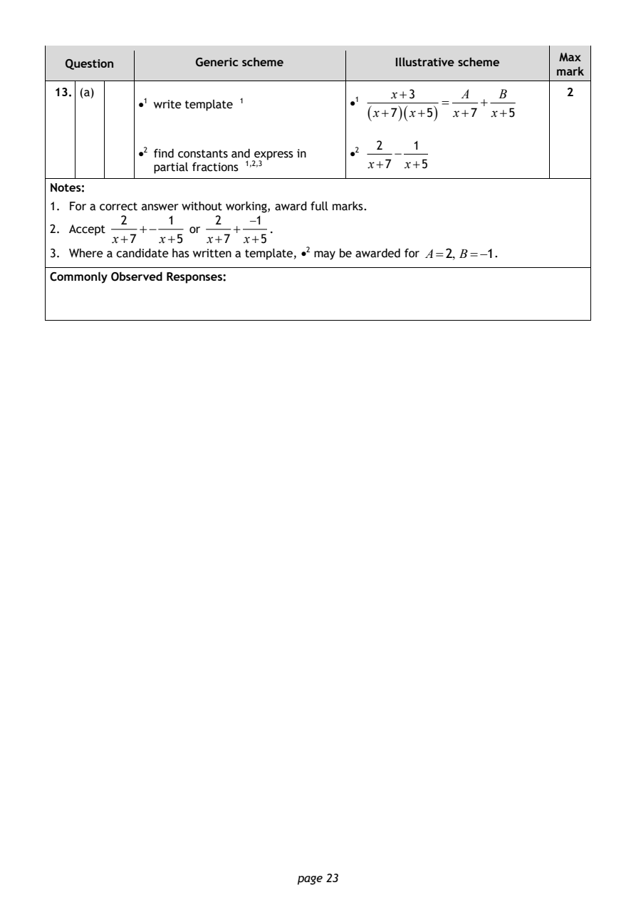
Selectable page text
Max
Question Generic scheme Illustrative scheme
mark
13. (a) x+3 A B 2
•1 write template ¹ •1 = +
(x+7)(x+5) x+7 x+5
2 1
•2 find constants and ₂e_{,}₃xpress in •2 −
partial fractions ¹^{,}
x+7 x+5
Notes:
1. For a correct answer without working, award full marks.
2 1 2 −1
2. Accept +− or + .
x+7 x+5 x+7 x+5
3. Where a candidate has written a template, •² may be awarded for A=2, B=−1.
Commonly Observed Responses:
page 23PDF page 24
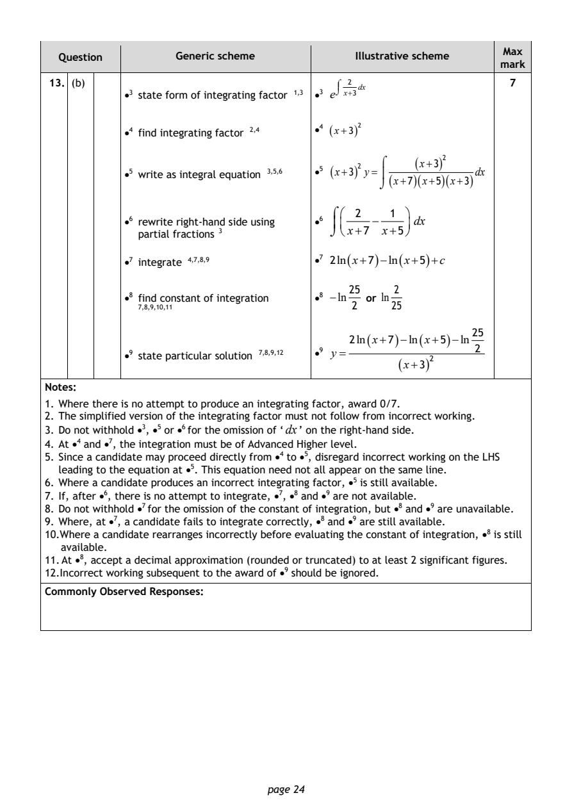
Selectable page text
Max
Question Generic scheme Illustrative scheme
mark
13. (b) 7
dx
•3 state form of integrating factor ¹^{,}³ •3 e^{⌠}^{}^{⌡}^{x}⁺²³
•4 find integrating factor ²^{,}⁴
•4 (x+3)²
⌠ (x+3)²
•5 write as integral equation ³^{,}⁵^{,}6 •5 (x+3)² y= dx
(x+7)(x+5)(x+3)
⌡
⌠ 2 1
•6 rewrite right-hand side using •6 − dx
partial fractions ³
⌡ x+7 x+5
•7 integrate ⁴^{,}⁷^{,}8,9 •7 2ln(x+7)−ln(x+5)+c
25 2
•8 f_{,}i₈n_{,}₉d_{,}₁ ₀c_{,}o₁₁nstant of integration •8 −ln or ln
2 25
7
25
2ln(x+7)−ln(x+5)−ln
2
•9 state particular solution ⁷^{,}⁸^{,}9,12 •9 y =
(x+3)²
Notes:
1. Where there is no attempt to produce an integrating factor, award 0/7.
2. The simplified version of the integrating factor must not follow from incorrect working.
3. Do not withhold •³, •5 or •⁶ for the omission of ‘dx’ on the right-hand side.
4. At •⁴ and •⁷, the integration must be of Advanced Higher level.
5. Since a candidate may proceed directly from •⁴ to •⁵, disregard incorrect working on the LHS
leading to the equation at •⁵. This equation need not all appear on the same line.
6. Where a candidate produces an incorrect integrating factor, •⁵ is still available.
7. If, after •⁶, there is no attempt to integrate, •⁷, •8 and •⁹ are not available.
8. Do not withhold •⁷ for the omission of the constant of integration, but •⁸ and •⁹ are unavailable.
9. Where, at •⁷, a candidate fails to integrate correctly, •⁸ and •⁹ are still available.
10.Where a candidate rearranges incorrectly before evaluating the constant of integration, •⁸ is still
available.
11. At •⁸, accept a decimal approximation (rounded or truncated) to at least 2 significant figures.
12.Incorrect working subsequent to the award of •⁹ should be ignored.
Commonly Observed Responses:
page 24PDF page 25
Paper 2, Question 14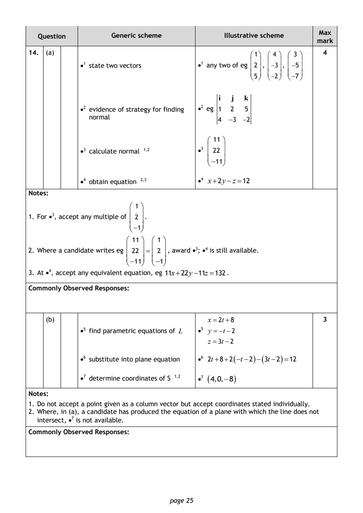
Selectable page text
Max
Question Generic scheme Illustrative scheme
mark
14. (a) 1 4 3 4
•1 state two vectors •1 any two of eg 2 , −3 , −5
5 −2 −7
i j k
•2 evidence of strategy for finding •2 eg 1 2 5
normal
4 −3 −2
11
•3 calculate normal ¹^{,}² •3 22
−11
•4 obtain equation ²^{,}³ •4 x+2y−z=12
Notes:
1
1. For •³, accept any multiple of 2 .
−1
11 1
2. Where a candidate writes eg 22 = 2 , award •³; •4 is still available.
−11
−1
3. At •⁴, accept any equivalent equation, eg 11x+22y−11z=132.
Commonly Observed Responses:
(b) x=2t+8 3
•5 find parametric equations of L •5 y =−t−2
z =3t−2
•6 substitute into plane equation •6 2t+8+2(−t−2)−(3t−2)=12
•7 determine coordinates of S ¹^{,}² •7 (4,0,−8)
Notes:
1. Do not accept a point given as a column vector but accept coordinates stated individually.
2. Where, in (a), a candidate has produced the equation of a plane with which the line does not
intersect, •⁷ is not available.
Commonly Observed Responses:
page 25PDF page 26
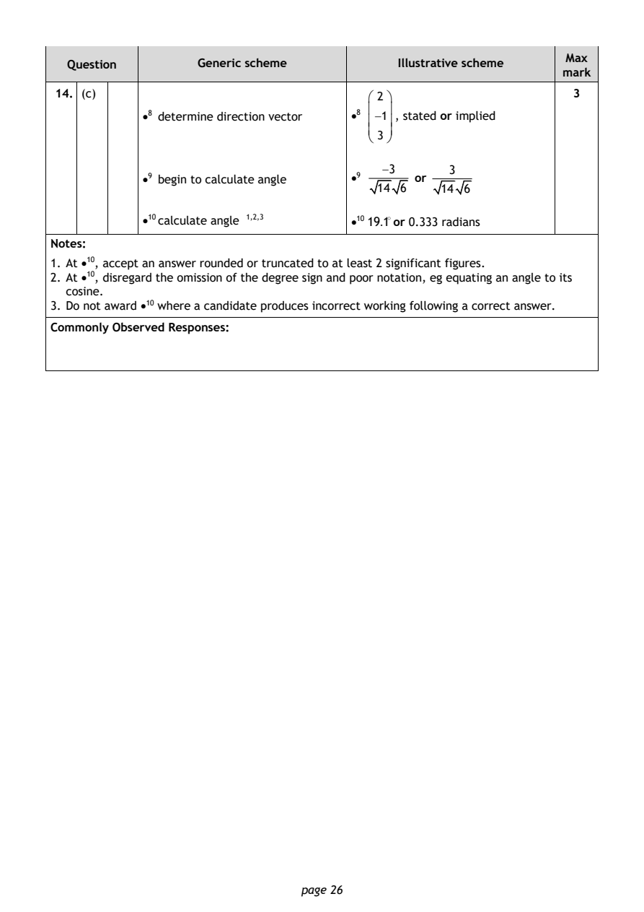
Selectable page text
Max
Question Generic scheme Illustrative scheme
mark
14. (c) 2 3
•8 determine direction vector •8 −1 , stated or implied
3
−3 3
•9 begin to calculate angle •9 or
14 6 14 6
•10 calculate angle ¹^{,}²^{,}3 •10 19.1^{}or 0.333 radians
Notes:
1. At •¹⁰, accept an answer rounded or truncated to at least 2 significant figures.
2. At •¹⁰, disregard the omission of the degree sign and poor notation, eg equating an angle to its
cosine.
3. Do not award •¹⁰ where a candidate produces incorrect working following a correct answer.
Commonly Observed Responses:
page 26PDF page 27
Paper 2, Question 15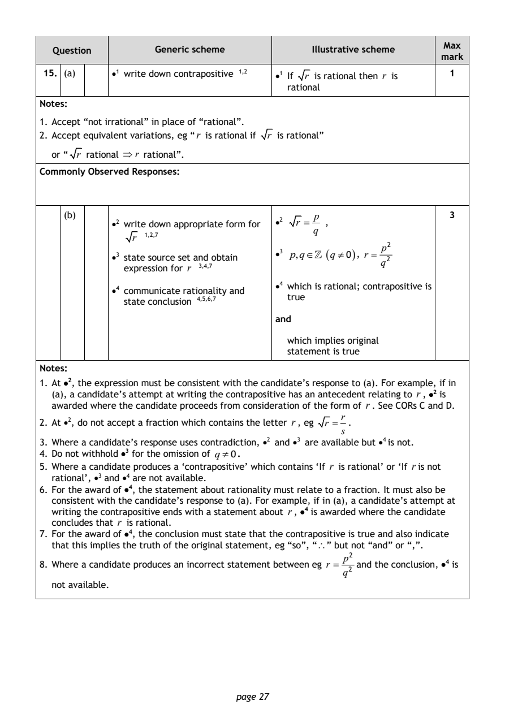
Selectable page text
Max
Question Generic scheme Illustrative scheme
mark
15. (a) •1 write down contrapositive ¹^{,}² •1 If r is rational then r is 1
rational
Notes:
1. Accept “not irrational” in place of “rational”.
2. Accept equivalent variations, eg “r is rational if r is rational”
or “ r rational ⇒ r rational”.
Commonly Observed Responses:
(b) p 3
•2 write down appropriate form for •2 r = ,
q
r ¹^{,}²,7
p²
•3 state source set and₄_{,} ₇obtain •3 p,q∈ (q≠0), r =
q²
expression for r ³^{,}
•4 which is rational; contrapositive is
•4 communicate ratio₅n_{,}₆a_{,}₇lity and
true
state conclusion ⁴^{,}
and
which implies original
statement is true
Notes:
1. At •², the expression must be consistent with the candidate’s response to (a). For example, if in
(a), a candidate’s attempt at writing the contrapositive has an antecedent relating to r, •² is
awarded where the candidate proceeds from consideration of the form of r. See CORs C and D.
r
2. At •², do not accept a fraction which contains the letter r, eg r = .
s
3. Where a candidate’s response uses contradiction, •² and •³ are available but •⁴ is not.
4. Do not withhold •³ for the omission of q≠0.
5. Where a candidate produces a ‘contrapositive’ which contains ‘If r is rational’ or ‘If ris not
rational’, •³ and •⁴ are not available.
6. For the award of •⁴, the statement about rationality must relate to a fraction. It must also be
consistent with the candidate’s response to (a). For example, if in (a), a candidate’s attempt at
writing the contrapositive ends with a statement about r, •⁴ is awarded where the candidate
concludes that r is rational.
7. For the award of •⁴, the conclusion must state that the contrapositive is true and also indicate
that this implies the truth of the original statement, eg “so”, “∴” but not “and” or “,”.
p²
8. Where a candidate produces an incorrect statement between eg r = and the conclusion, •⁴ is
q²
not available.
page 27PDF page 28
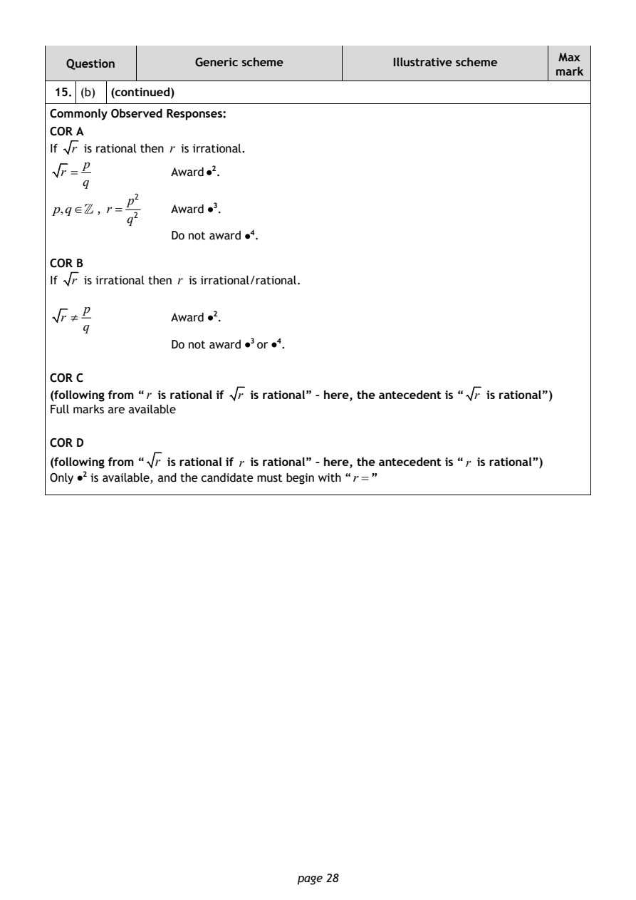
Selectable page text
Max
Question Generic scheme Illustrative scheme
mark
15. (b) (continued)
Commonly Observed Responses:
COR A
If r is rational then r is irrational.
p
r = Award •².
q
p²
p,q∈ , r = Award •³.
q²
Do not award •⁴.
COR B
If r is irrational then r is irrational/rational.
p
r ≠ Award •².
q
Do not award •³ or •⁴.
COR C
(following from “r is rational if r is rational” – here, the antecedent is “ r is rational”)
Full marks are available
COR D
(following from “ r is rational if r is rational” – here, the antecedent is “r is rational”)
Only •² is available, and the candidate must begin with “r=”
page 28PDF page 29
Paper 2, Question 16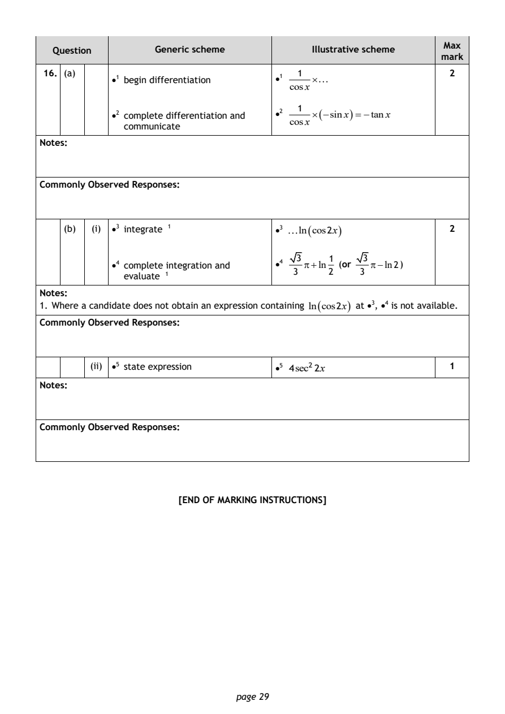
Selectable page text
Max
Question Generic scheme Illustrative scheme
mark
16. (a) 1 2
•1 begin differentiation •1 ×
cosx
1
•2 complete differentiation and •2 ×(−sinx)=−tanx
cosx
communicate
Notes:
Commonly Observed Responses:
(b) (i) •3 integrate ¹ •3 ln(cos2x) 2
3 1 3
•4 complete integration and •4 π+ln (or π−ln2)
3 2 3
evaluate ¹
Notes:
1. Where a candidate does not obtain an expression containing ln(cos2x) at •³, •4 is not available.
Commonly Observed Responses:
(ii) •5 state expression •5 4sec²2x 1
Notes:
Commonly Observed Responses:
[END OF MARKING INSTRUCTIONS]
page 29